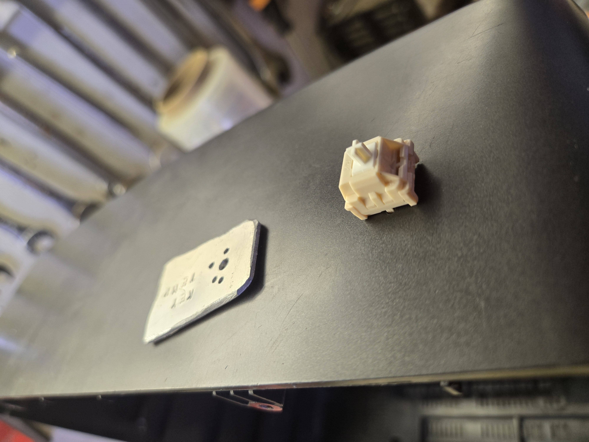

Captains Log 0004
April 5, 2025
Keyboard Switch Mounting Template
I whipped up this little template for drilling my holes when mounting keyboard switches. It's the most annoying part of the process, lining it all up perfectly, and this makes it a breeze. For the smaller outer holes I just pick a bit somewhat that size, big enough to feed a cable through. The main hole is the part that does most of the securing work and it's a perfect fit using a 9/64 drill bit. Might add another hole and just turn it intp a key ring so i don't lose it. Pretty handy though
Here you can see me using it for attatching the main OLED control button to the top of my gutted tv I used in my terrarium build project.